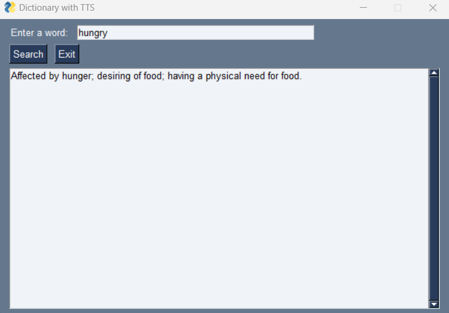

This web page provides an overview of a Python-based dictionary application that features text-to-speech functionality. The application allows users to enter a word, search for its definition, and hear the pronunciation through computer speech output.
The application uses several libraries to create a GUI, fetch definitions from a dictionary API, and convert text to speech:
requests library to retrieve the definition.
# Fetch and display definition
if event == 'Search':
word = values['WORD']
response = requests.get(f"https://api.dictionaryapi.dev/api/v2/entries/en/{word}")
...
# Convert definition to speech and play
tts = gTTS(text=definitions, lang='en')
...
pygame.mixer.music.play()
To run this application, ensure that you have installed the following Python libraries:
PySimpleGUIgTTSrequestspygameThese can be installed using pip:
pip install PySimpleGUI gTTS requests pygame